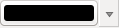

重要
翻訳は あなたが参加できる コミュニティの取り組みです。このページは現在 100.00% 翻訳されています。
表記規則
このセクションでは、このマニュアルを通して使われている、一貫した記述ルールについて説明します。
GUI 表記規則
グラフィカルユーザインタフェース (GUI) の記述スタイルは、GUIの見た目に似せるように意図されています。このスタイルは一般的にツールチップが表示されていない状態を反映しています。このためユーザはGUIの外観をざっと眺めるだけで、マニュアルの指示と同じものを見つけることができます。
メニューのオプション： や
ツール：
 ラスタレイヤの追加
ラスタレイヤの追加ボタン:デフォルトとして保存
ダイアログボックスの見出し： レイヤプロパティ
タブ： 一般情報
チェックボックス
 描画
描画ラジオボタン：
 Postgis SRID
Postgis SRID  EPSG ID
EPSG ID数値を選択:

文字を選択:

ファイルの一覧から選択:...
色の選択:

スライダー:

テキストの入力:

影がついているものは、クリック可能なGUIコンポーネントであることを表しています。
テキストやキーボードの記述ルール
このマニュアルでは、クラスやメソッドなど異なるエンティティを識別するために、テキストやキーボードショートカット、コーディングに関連するスタイルも使われています。これらのスタイルはQGISでの実際のテキストやコードの外観には一切対応していません。
ハイパーリンク: https://qgis.org
キーの組み合わせ： Ctrl+B を押す ： これはCtrl キーを押したまま、Bキーを押すことを意味します。
ファイル名:
lakes.shpクラス名: NewLayer
メソッド: classFactory
サーバー: myhost.de
ユーザー入力テキスト:
qgis --help
プログラムのコードは固定幅フォントで表示されます:
PROJCS["NAD_1927_Albers",
GEOGCS["GCS_North_American_1927",
プラットフォーム固有の指示
GUIでのひとつづきの操作で、文字も少ない場合は、インラインで（行内で）フォーマットされます。たとえば： 

 をクリック —— これは「Linux、UnixおよびWindowsプラットフォーム上では最初に [ファイル] メニューをクリックしてそれから [終了] する」こと、一方「macOSプラットフォーム上では最初に [QGIS] メニューをクリックしてそれから [終了] する」ことを示しています。
をクリック —— これは「Linux、UnixおよびWindowsプラットフォーム上では最初に [ファイル] メニューをクリックしてそれから [終了] する」こと、一方「macOSプラットフォーム上では最初に [QGIS] メニューをクリックしてそれから [終了] する」ことを示しています。
文字が多くなる場合はリストとしてフォーマットされることもあります:
- Linux・Unixではこうします
- Windowsではこうします
- macOSではこうします
または、段落としてフォーマットされることもあります:
これはLinux・Unix・macOSプラットフォーム向けの解説です。文章中の解説手順に基づいて作業してください。
これはWindowsプラットフォーム向けの解説です。文章中の解説手順に基づいて作業してください。
ユーザーガイド中のスクリーンショットはいろいろなプラットフォームで作成されています。